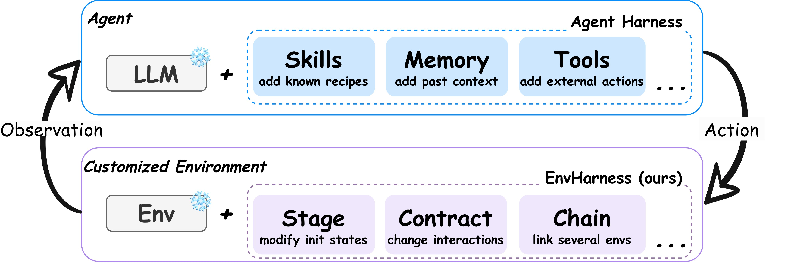
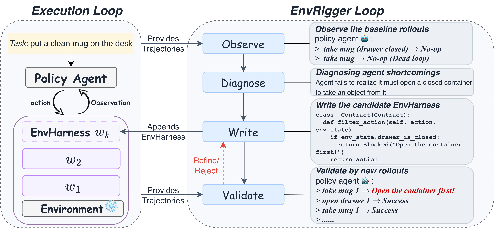

EnvHarness: A Harness for the Environment — Reshaping Static Worlds Around the Agent's Weaknesses
Paper: arXiv 2608.19880 (v1, Aug 20 2026), by Chengsong Huang (WashU, interned at Google), Zifeng Wang, Rujun Han, Jun Yan, et al., Tomas Pfister, Chen-Yu Lee — Google Cloud AI Research. Code: github.com/google-research/envharness. Grounded in the full paper PDF text; figures extracted from the PDF.
TL;DR
- EnvHarness applies the harness idea to the other side of the agent–environment loop: a programmable layer of plug-in components that wraps a frozen, hand-built environment and reshapes its behavior purely at the
reset()/step()/obs()interface — Agent = Model + Harness, and now Customized Env = Static Env + EnvHarness. Because nothing inside the environment changes, every reshaped variant inherits the original human-built verifier, dodging the correctness tax that plagues LLM-generated environments. - Three component types: Stage (rewrites the initial state by applying an action sequence after
reset()— hide the mug in a drawer, or pre-complete subgoals), Contract (rewrites action/observation spaces and transition rules — block shortcut actions, truncate observations, enforce preconditions), Chain (composes two environments into one extended episode). EnvRigger automates customization: Observe rollouts → Diagnose the policy's flaws → Write candidate components → Validate on fresh rollouts, accepting only components that are challenging-but-solvable. - Skill-based learning: up to +9.0 points over original environments (ALFWorld OOD) across five benchmarks in four domains, with 9.8% fewer steps on SWE-bench Verified — while purpose-built generators (SWE-smith, GenEnv, VeriEnv) are beaten in their own domains. Under GRPO the reshaped environments also train stronger policies, and in the scaling study EnvHarness climbs 47.7 → 54.8 at 300 environments while real and generated environments flatten.
Why this matters
The environments story in your rl category has so far been about generation — SPADE trains a designer to write executable environments from scratch; the whole synthetic-env wave over-generates and filters because LLM-written verifiers can't be trusted. EnvHarness stakes out the complementary position: the world already has a stock of expensive, human-verified environments (ALFWorld, WebArena, SWE-bench task instances), and the binding constraint isn't their number but their staticness — they present the same episode to every policy regardless of what that policy is bad at, and have nothing left to teach once solved. Reshaping-at-the-interface gets you targeted, policy-conditioned training signal while keeping the one thing generation can't reliably produce: a trusted reward.
The scaling figure is the strategic claim. Under an identical environment budget on SWE-bench Verified, skills from original environments and from SWE-smith-generated ones flatten out (52.1 / 50.4 at 300 envs), while EnvHarness keeps climbing (54.8) — because each new batch is synthesized against the policy equipped with previously accumulated skills. That is environment–policy co-evolution with a frozen verifier, the same "targeting the learning frontier" logic as SPADE's regret signal, implemented as wrappers instead of world-models-from-scratch. If sandbox scaling is the new post-training axis (the GLM-5.3 thesis), this is an argument that the cheap direction is up the harness, not out into generated worlds.

Figure 2 from the paper: the same plug-in principle on both sides of the interaction loop — capabilities for the frozen model, customization for the frozen environment.The core idea
Model the environment as \(E=(\mathcal{S},\mathcal{A},\mathcal{O},T,R,s_{0})\). An EnvHarness component is an environment-agnostic transformation applied strictly at the interface:
The three instantiations, on the running ALFWorld task "put a clean mug on the desk":
- Stage \(w_{\text{stage},\delta}\), parameterized by an action sequence \(\delta=(a_{1},\dots,a_{k})\) replayed on the fresh initial state:
e.g. take mug 1, open drawer 1, put mug 1 in drawer 1, close drawer 1 — the mug is now hidden, forcing search skills; or conversely pre-clean the mug to shorten the horizon for a struggling policy.
- Contract \(w_{\text{contract},r}\), a triplet \(r=(f_{A},f_{T},f_{O})\) rewriting exposed spaces and transitions: \((\mathcal{A}^{\prime},\mathcal{O}^{\prime},T^{\prime})=(f_{A}(\mathcal{A}),f_{O}(\mathcal{O}),f_{T}(T))\) — truncate the room description to two sentences (partial observability), block clean mug unless the mug is held (precondition), remove teleport-style navigation (force stepwise search).
- Chain \(w_{\text{chain},\ell}\), \(\ell=(E_{\text{ext}},g)\): compose a second environment under one interface with union spaces and a composite reward — append "heat a potato and put it on the countertop," success only when both verifiers pass, training goal persistence past the natural stopping point.
Components compose (non-commutatively): \(E^{\prime}=w_{\text{chain},\ell}\,w_{\text{contract},r}\,w_{\text{stage},\delta}(E)\). Since every intervention is external, the ground-truth evaluation logic is preserved — the original verifier still scores the episode.
How it works
Customization must be conditioned on the policy. The task-policy-conditioned map
is realized by EnvRigger, which treats \(\pi\) strictly as a black box:

Figure 4 from the paper: Observe → Diagnose → Write → Validate, with a write-and-validate inner loop. The example Contract blockstake mug while the drawer is closed, returning "Open the container first!" — turning a silent no-op dead-loop into a learnable signal.
# EnvRigger (condensed from §3.2)
for each training task t:
# Observe: run policy π in current (wrapped) env, collect rollouts
trajs = rollout(π, E_wrapped, t) # successes bound the flaw, failures expose it
# Diagnose: root-cause analysis as text
diag = analyze(trajs) # dead loops, unparsed long obs, misread constraints
# struggling policy -> scaffold/simplify; perfect policy -> make env harder
# Write & Validate loop:
repeat until accepted or budget exhausted:
cand = write_components(diag) # one or more Stage/Contract (code)
E' = wrap(E_current, cand)
fresh = rollout(π, E', t)
decide(fresh): accept -> add cand to EnvHarness
reject -> unsolvable or non-challenging
refine -> feed trajectories + scaling feedback back to Write
# skills are then extracted from trajectories in customized envs (ReasoningBank-style)
Two design choices matter for interpreting the results. First, EnvRigger and the policy share the same backbone (Gemini-3.1-Flash-Lite on ALFWorld/WebArena, Gemini-3.5-Flash elsewhere), so gains cannot come from distilling a stronger external model. Second, downstream learning is skill extraction following ReasoningBank from trajectories collected in the customized environments, evaluated on strictly disjoint held-out instances; Chain is excluded from the automated loop (EnvRigger can't observe joined environments' internal states) and analyzed separately.
Results
- Skill-based learning, five benchmarks (means over 3 runs): ALFWorld avg 62.4 → 68.3 (+5.9; OOD 61.4 → 70.4, +9.0); WebArena avg 38.5 → 41.6 (+3.1); SWE-bench Verified 49.88 → 52.58 SR with steps 55.01 → 49.61 (skills from unmodified envs made trajectories longer); OfficeQA 54.40 → 56.20 EM; SpreadsheetBench 45.88 → 49.15 pass@1 — where skills from static environments fall below the no-skill baseline (45.88 vs 46.44). Static worlds only let the policy practice what it already does; badly chosen practice actively hurts.
- Beats the domain specialists on their home turf: +5.7 avg over GenEnv on ALFWorld (+8.5 OOD), ahead of VeriEnv on WebArena, +2.46 SR over SWE-smith on SWE-bench with 5.11 fewer steps — from one domain-agnostic interface, including office automation where no generation baseline exists at all.
- RL compatibility (GRPO, Qwen3-8B-base): training on reshaped environments beats original-environment training on 3/4 metrics — ALFWorld in-dist 81.4 → 87.9, WebShop score 75.6 → 79.2, SR 66.0 → 67.4 (ALFWorld OOD dips 89.6 → 88.8). The reshaped environments are an optimization signal, not just skill-mining substrate.
- Environment scaling (SWE-bench Verified, fixed budget, skill bank rebuilt every 50 envs): EnvHarness 47.67 → 54.79 and still rising at 300; original envs 52.13, SWE-smith 50.37, both flattening. The stated mechanism: baseline batches are drawn independently of the learner, EnvHarness batches target the policy with its accumulated skills — co-evolution.
- Cross-model: on four backbones spanning 30.7 → 67.2 no-skill SR (Gemini 3.1 Flash-Lite, Qwen3.6-27B, Gemini 3.5 Flash, Claude Sonnet 4.6), EnvHarness skills beat original-env skills by 2.7–3.7 points everywhere — the loop neither breaks on the weakest policy nor saturates on the strongest; capability changes the content of diagnoses, not the applicability of the loop.
- Chain: alone, SR 49.63 (≈ baseline) but average steps 53.58 → 41.96; combined with Stage/Contract skills, best of both — 54.30 SR / 43.12 steps. Training under "success = both halves" buys efficiency and goal persistence rather than raw success rate.
How it connects
- env-generator-dynamics (SPADE) — the same week's opposite bet: SPADE generates environments-as-code with a trained designer and pays for it with verifier trust issues; EnvHarness reshapes trusted environments and pays with dependence on an existing environment stock. Both condition on the learner's frontier (regret signal vs. diagnose-and-validate loop); the obvious synthesis is a SPADE-style trained rigger, since EnvRigger is currently pure prompting with no learning signal of its own.
- beyond-env-scaling — ability-aware selection over a fixed pool beats using everything; EnvHarness makes the stronger claim that you can manufacture the frontier from few base environments rather than select toward it. The shared conclusion across all three: coverage-at-the-frontier, not environment count, is the operative variable.
- fragility-self-improving-agents (tutorial, same week) — the awkward neighbor: EnvHarness's SL gains flow through ReasoningBank-style skill extraction, which the Salesforce re-evaluation shows is high-variance and order-sensitive on WebArena. EnvHarness reports 3-run means with stds (WebArena stds up to 3.1 against a +3.1 avg gain), so the web numbers specifically deserve the fragility paper's stress tests — shuffled orders, more runs.
- GLM-5.3 sandbox scaling (tracked item) — the industrial version of the thesis: executable-environment quantity and diversity as the new post-training scaling axis. EnvHarness is a concrete answer to where the marginal sandbox should come from: wrap, don't build.
- evolving-benchmarks / zetta-embodied-harness — coevolving the task distribution with the agent, and harness layers for embodied stacks; EnvHarness generalizes the pattern with the cleanest separation yet between what evolves (the wrapper) and what stays trusted (the verifier).
Critical take
The verifier-preservation guarantee is doing less work than the framing suggests. It holds mechanically — the reward function is untouched — but a Stage that rearranges the initial state or a Contract that masks observations changes what the episode is; whether the original success criterion still measures the intended competence is validated only by EnvRigger's own LLM judgment over fresh rollouts of the same policy being trained. Challenging-but-solvable-for-π is a moving target, and nothing independent audits it (contrast SPADE, where at least the hint-gap is a measured quantity). Per-benchmark gains are also modest relative to reported variance outside ALFWorld — WebArena +3.1 with baseline stds up to 3.1, OfficeQA +1.8 EM with stds ~2.3 — so the robust findings are the aggregate consistency, the efficiency gains, and the scaling curve, not any single benchmark delta. Chain, arguably the most novel component, had to be excluded from the automated loop and paired randomly. And the co-evolution loop was run to 300 environments and 15 skills — far short of where Goodharting of the diagnose-write-validate signal (an LLM grading environments by its own policy's failure profile) would show up. The idea, though, is exactly right-shaped for this tracker: the harness abstraction applied symmetrically, with the environment side now programmable, versioned, and cheap.
If you remember three things
- Customized Env = Static Env + EnvHarness: Stage (initial state), Contract (actions/observations/transitions), Chain (composition) reshape a frozen environment strictly at the
reset()/step()interface — so every variant keeps the original human-built verifier, the thing LLM-generated environments can't guarantee. - EnvRigger closes the loop black-box: Observe → Diagnose → Write → Validate, accepting only components that fresh rollouts show are challenging-but-solvable for this policy — up to +9.0 points over static environments, beating domain-specific generators with one domain-agnostic mechanism, at matched backbone (no teacher distillation).
- Reshaped beats more: under identical budgets, policy-targeted reshaped environments keep improving (47.7 → 54.8 at 300 envs on SWE-bench Verified) where both real and generated environment scaling flatten — the frontier, not the count, is what scales.